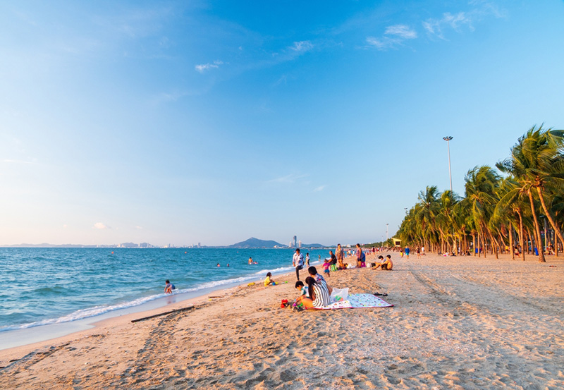

ชายหาดบางแสน
ชายหาดบางแสน เริ่มต้นกันกับจุดเช็คอินและที่เที่ยวชลบุรี ห่างจากสะพานปลาไปไม่ไกลนัก ติดทะเล ถือเป็นซิกเนเจอร์ของจังหวัดชลบุรี ใครที่มาเที่ยว ต้องไม่พลาดแลนด์มาร์กสำคัญนี้เป็นอันขาด เพราะนอกจากน้ำใส ทะเลสวยแล้ว ที่นี่เขายังมี 8 ร้านอาหารริมทะเลบางแสน บรรยากาศสุดชิล วิวสุดเลิศ เหมาะสำหรับนั่งสังสรรค์ส่งท้ายทริปอันยาวไกลนี้จริงๆ  แผนที่ https://maps.app.goo.gl/u74kr6FRsS1B5Lwy8เวลาเปิด-ปิด ทุกวัน 08:30 - 17:30 น.
อัตราค่าเข้าชม ฟรี